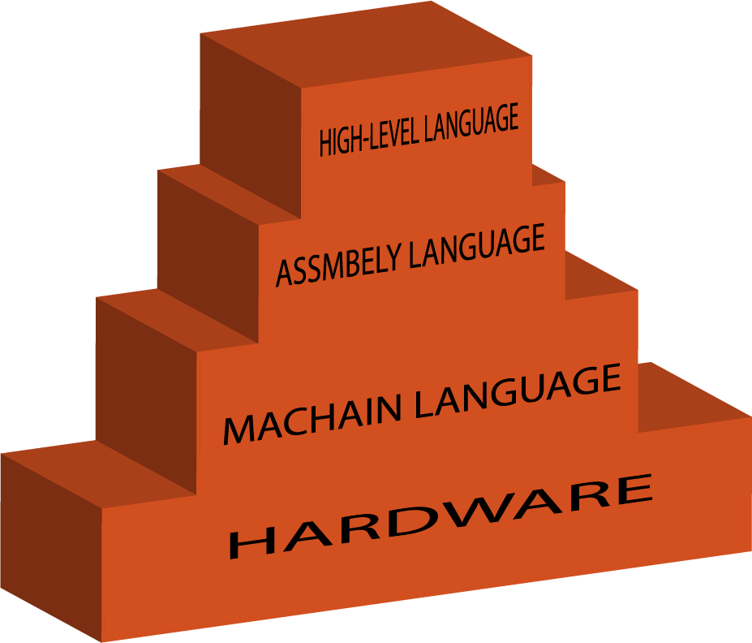

A computer is a device that can accept human instruction, processes it and responds to it or a computer is a computational device which isused to process the data under the control of a computer program.Program is a sequence of instruction along with data.
CPU is called the brain of our computer because it accepts data, provides temporary memory space to it until it is stored(saved) on the hard disk, performs logical operations on it and hence processes (here also means converts) data into information. We all know that a computer consists of hardware and software.Software is a set of programs that performs multiple tasks together. An operating system is also a software (system software) that helps humans to interact with the computer system.
A program is a set of instructions given to a computer to perform a specific operation. or computer is a computational device which is used to process the data under the control of a computer program.While executing the program, raw data is processed into a desired output format. These computer programs are written in a programming language which are high level languages. High level languages are nearly human languages which are more complicated to the computers.The computer only understands binary language (the language of 0 and 1) which are called machine language, or low level language.Each individual 0 or 1 is called a binary digit , or bit for short. The number of bits that make up a single command vary -- for example, some CPUs process instructions that are always 32 bits longSo after knowing the basics, we are ready to create a very simple and basic program. we have different languages like C, C++, C#, Java, python, etc to communicate with the computers. but the programs we are going to write are in a high-level language which is almost similar to human language.
Between high-level language and machine language there are assembly language also called symbolic machine code. Assembly language are particularly computer architecture specific. Utility program (Assembler) is used to convert assembly code into executable machine code. High Level Programming Language are portable but require Interpretation or compiling to convert it into a machine language which is computer understood.
Machine and assembly languages are “low-level,” requiring a programmer to manage explicitly all of a computer’s idiosyncratic features of data storage and operation. In contrast, high-level languages shield a programmer from worrying about such considerations and provide a notation that is more easily written and read by programmers.